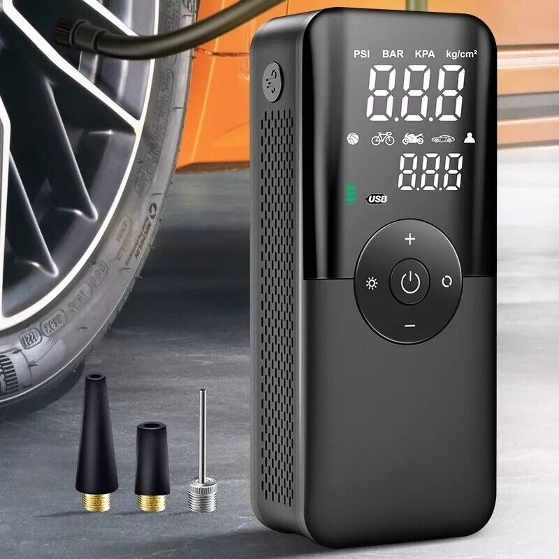
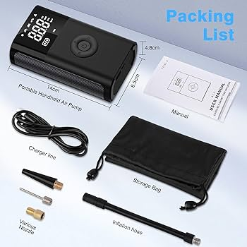

Step 1
To begin, you will first open the box and take the contents out. You will review the PortaPump, a charger, and the following accessories.
Step 2
Second, you will choose the proper fitting based on what you want to pump up, for example choose the needle attachment if you are inflating a ball. Screw the attachemnt on and push the needle into the ball hole.
Step 3

Third, press the on button located in the center of the device. Select the rpms you will pump at, and it is optional to set a max psi for automatic shut off. Wait until you reach the desired amount. Remove the needle and turn the pump off.
Step 4

Finally, enjoy a pumped ball, and free from the need of those hand-pumps that take up all the space in your car!